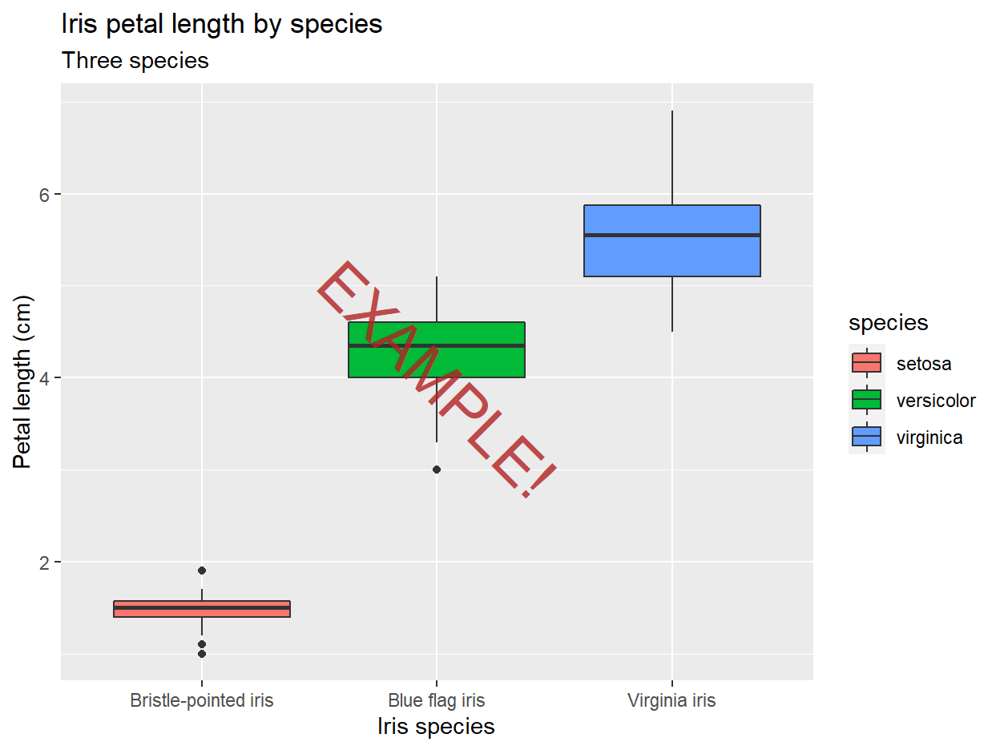
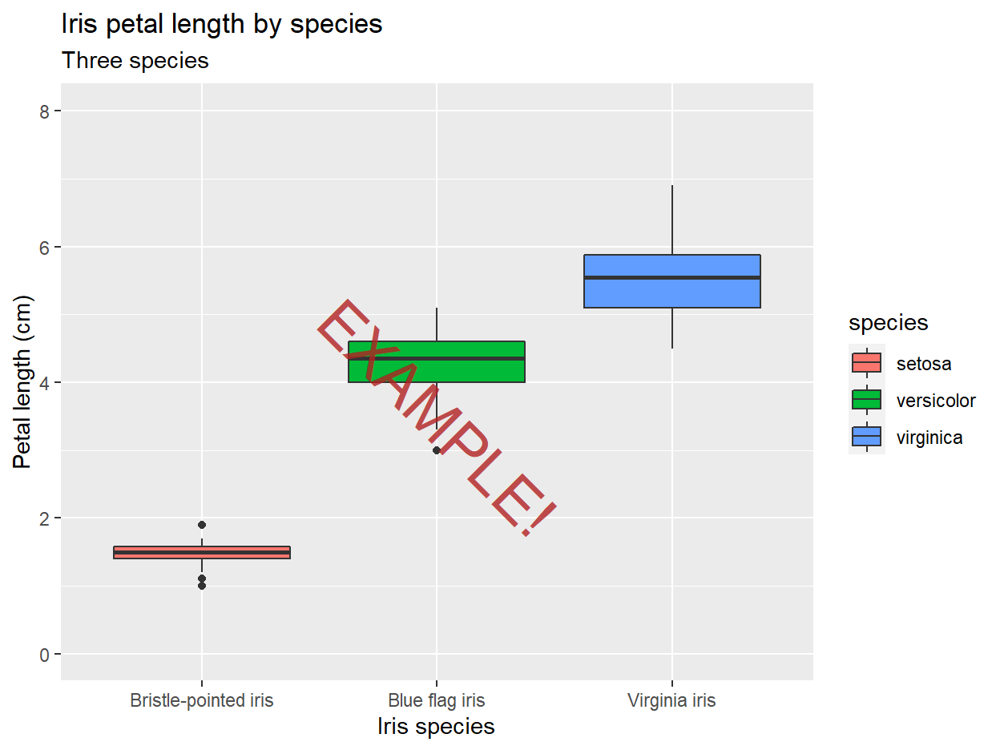

Intro
This interactive worksheet will walk you through a series of mini-challenges designed to demonstrate some of the many aesthetic adjustments you can make to a ggplot2 graph for readability and pizzazz.
After completing this worksheet, learners will be able to:
- Describe many aesthetics that can be modified in
ggplot2plots - search references and function docs to identify techniques for modifying a desired plot aesthetic
- Modify those plot aesthetics using
ggplot2code
The exercises below heavily reference the official ggplot2 textbook. The textbook is not a cookbook for producing any type of plot, but I recommend it to any R users looking to gain first-principles fluency with ggplot2’s design philosophy and how its features are structured. You may find it useful to keep the textbook open in another tab while completing the worksheet.
Similarly, this worksheet does not demonstrate every possible ggplot aesthetic modification (and you really can adjust nearly every feature of a plot with ggplot2!). The worksheet walks through common aesthetic changes I find myself using in my own plots, that I hope will apply to your plotting needs as well.
Worksheet layout
The exercises below assume a general comfort with adjusting ggplot2 code by adding new layers and changing the arguments specified within existing layers.
In particular, some exercises will provide a pre-coded base plot stored in a variable, and ask you to to add layers to the plot in that variable.
Other exercises will ask you to adjust the base code for a plot in order to change its appearance. (If you see the full base code written out in an exercise chunk, that’s your first hint that you will need to alter the code provided!)
Remember that constructing a whole multi-layered ggplot in one call is roughly equivalent to constructing the base layers of that plot, assigning the plot to a variable, and then adding another element to that variable. So these two chunks should produce identical plots:
# Building the whole plot at once
iris %>%
ggplot(aes(x = Species, y = Petal.Length, fill = Species)) +
geom_boxplot() +
theme_bw()
# Building just the base layers, storing in variable
plot_iris <- iris %>%
ggplot(aes(x = Species, y = Petal.Length, fill = Species)) +
geom_boxplot()
# Calling the base plot via variable, then adding layer(s)
plot_iris + theme_bw()In this worksheet, you can assume the following:
- When a base plot variable is provided in an exercise chunk, you will not need to edit the base plot to complete that exercise. You will only need to add new layers
- The code that creates base plots will always be displayed in a read-only chunk for your reference
- When raw
ggplot2code is provided in an exercise chunk, you will need to edit the base plot to complete that exercise. You may also need to add new layers, but not necessarily
Finally, remember that because of ggplot2’s modular, layered structure, almost all of the aesthetic changes demonstrated in this worksheet can be mixed and matched with each other in a single plot to customize as much as you would like. These exercises mostly show the adjustments one at a time for simplicity, but you can (and should) combine them in your own plots!
The current worksheet
This worksheet generally covers axis adjustments and color mapping. The majority of the exercises demonstrate ways to re-label, re-order, and re-scale discrete and continuous axes, while the last section shows different ways to adjust how a color scheme is mapped to a data variable.
For more ggplot2 aesthetics practice, check out the second worksheet, covering plot annotations and theme elements.
Bug reporting and exercise suggestions
If you encounter a bug (incorrect solution, default exercise chunk doesn’t run, etc.) or would like to suggest plot features for additional exercises, please submit an issue on the GitHub repo for these worksheets.
Modifying titles of plot elements
The default axis/legend title in ggplot2 is the name of the variable displayed on that axis/legend. While you yourself will know what these variable names mean in your data, in any graph that you will ever show to another person, you will want to re-label axes/legends and add a title to make your plot more readable. ggplot2 comes with an all-purpose function, labs(), that will allow you to edit the titles of pretty much any plot element (and figure captions).
To illustrate this, we will look at the iris dataset collected by botanist Edgar Anderson (1935), which measures the flower dimensions of several exemplars of 3 iris species.
In the exercise below, use the labs() function as demonstrated in Section 8.1 of the textbook to add the following titles shown below on the solution plot:
- x-axis: “Iris species”
- y-axis: “Petal length (cm)”
- legend for fill color: “species”
- plot title: “Iris petal length by species”
- plot subtitle: “Three species”
Hint: You only need to call labs() once to set all of these labels.
plot_iris <- iris %>%
ggplot(aes(x = Species, y = Petal.Length, fill = Species)) +
geom_boxplot()plot_irisplot_iris +
labs(x = "Iris species",
y = "Petal length (cm)",
fill = "species",
title = "Iris petal length by species",
subtitle = "Three species")Modifying axis labels of discrete variables
Sometimes, in addition to editing axis titles, you will also want to edit the level labels of a discrete variable to improve readability. For example, if you have a binary gender variable coded as “F” and “M” plotted on one axis, you may want to have the plot say “Female” and “Male” instead.
In the exercise below, use the function & argument demonstrated in section 10.3.2 of the textbook to change the labels of the iris species to their common names (per Wikipedia) instead of their taxonomic names:
- Iris setosa -> “Bristle-pointed iris”
- Iris virginica -> “Virginia iris”
- Iris versicolor -> “Blue flag iris”
plot_iris_labeled <- plot_iris +
labs(x = "Iris species",
y = "Petal length (cm)",
fill = "species",
title = "Iris petal length by species",
subtitle = "Three species")
plot_iris_labeledIn the example graph, the discrete labels are on the y-axis, but in this graph, the discrete labels are on the x-axis.
plot_iris_labeled +
scale_x_discrete(labels = c("setosa" = "Bristle-pointed iris",
"virginica" = "Virginia iris",
"versicolor" = "Blue flag iris"))Modifying axis label appearance for readability
When plotting a discrete variable along one axis (in these examples, the x-axis), it often makes sense to change the order of variable levels along that axis so that the order of variables along the axis adds meaning to the plot.
To illustrate this more clearly, let’s look at a different dataset now: the area (in square miles) of the 50 US states. This dataset helps illustrate the benefits of the next few techniques, in particular because it has a lot of levels (50!) of a discrete variable.
First, we’ll plot a lollipop plot with state on the x-axis, and area on the y-axis. With this plot style, we can reap the benefits of both bar graphs and point graphs for visualizing magnitude data like state areas. (The lines help illustrate the magnitude of each state’s area, like a bar graph, but the skinniness of the lines and the “lollipop” points on top of each line make it easier to compare the area of each state than it would be comparing wide bars on a bar graph.)
us_states_by_area <- tibble(state = datasets::state.name,
abbrev = datasets::state.abb,
area = datasets::state.area,
region = datasets::state.region,
division = datasets::state.division)
plot_us_states_by_area <- us_states_by_area %>%
ggplot(aes(x = state, y = area)) +
# the stick of the lollipop
geom_segment(aes(xend = state, y = 0, yend = area)) +
# the candy of the lollipop
geom_point()
The state names along the x-axis are unreadable because they are written on top of each other! Next, we’ll practice a few techniques for adjusting the axis labels for levels of a discrete variable that specifically mitigate overplotted labels like these.
Rotating axis labels
In the exercise below, use one of the functions demonstrated in section 10.3.3 of the textbook to rotate the axis labels for the state names by 45 degrees counter-clockwise. (The labels should appear to be right-justified to the axis.)
plot_us_states_by_areaplot_us_states_by_area +
scale_x_discrete(guide = guide_axis(angle = 45))In the exercise below, use the same function to rotate the axis labels for the state names by 45 degrees clockwise instead. (The labels should appear to be left-justified to the axis.)
plot_us_states_by_area
If rotating by +45 rotates the axis labels by 45 degrees clockwise, what would rotating by a negative number do?
plot_us_states_by_area +
scale_x_discrete(guide = guide_axis(angle = -45))Dodging axis labels
Now, use another argument to the same function, as demonstrated in section 10.3.3, to “dodge” the axis labels by a factor of 5 so that state name labels are jittered into 5 rows.
plot_us_states_by_area
plot_us_states_by_area +
scale_x_discrete(guide = guide_axis(n.dodge = 5))As you can see, for these data, dodging into as many as 5 rows still doesn’t fully stop the state names from plotting on top of one another, and it’s hard to tell which lollipops the labels in the lower rows are referring to. For this reason, I usually prefer rotating axis labels over dodging them, but either might be the best choice depending on the plot. We’ll use counterclockwise-rotated axis labels for the rest of the plots in this section.
Reordering levels of a discrete variable
From our current plot, we can get information about smaller and larger states, but the order is not very sensible. To see the very largest states, a graph reader can go to the tallest lollipops and then look down to the axis label, but they have to jump around from lollipop to lollipop because the states are ordered alphabetically along the x-axis, not by area.

In the exercise below, use the function demonstrated in the forcats package vignette: Ordering by another variable to reorder the states along the x-axis by area from smallest to largest.

us_states_by_area %>%
ggplot(aes(x = state, y = area)) +
geom_segment(aes(xend = state, y = 0, yend = area)) +
geom_point() +
scale_x_discrete(guide = guide_axis(angle = 45))Remember that by default, if axis titles are not manually changed, the x- and y-axis titles are the same as the values that were entered in ggplot(aes(x = ###, y = ###)). The solution plot is thus showing you part of the answer.
us_states_by_area %>%
ggplot(aes(x = fct_reorder(state, area), y = area)) +
geom_segment(aes(xend = state, y = 0, yend = area)) +
geom_point() +
scale_x_discrete(guide = guide_axis(angle = 45))Now, refer to the function’s docs and use another argument to flip the reordering, so the states are ordered from largest to smallest instead.
us_states_by_area %>%
ggplot(aes(x = state, y = area)) +
geom_segment(aes(xend = state, y = 0, yend = area)) +
geom_point() +
scale_x_discrete(guide = guide_axis(angle = 45))
us_states_by_area %>%
ggplot(aes(x = fct_reorder(state, area, .desc = TRUE), y = area)) +
geom_segment(aes(xend = state, y = 0, yend = area)) +
geom_point() +
scale_x_discrete(guide = guide_axis(angle = 45))Bonus exercise: Since the x-axis label looks pretty gnarly now because of the code used to reorder states along the x-axis by their area, and we should re-label axes and title our plot anyway, use labs() to relabel the plot of US states by area to match the solution plot below.
plot_us_states_by_area_angled_reordered <- us_states_by_area %>%
ggplot(aes(x = fct_reorder(state, area), y = area)) +
geom_segment(aes(xend = state, y = 0, yend = area)) +
geom_point() +
scale_x_discrete(guide = guide_axis(angle = 45))plot_us_states_by_area_angled_reorderedplot_us_states_by_area_angled_reordered +
labs(x = "US state",
y = "Area (sq mi)",
title = "Alaska is really big")Adjusting continuous axis limits
Since the last few exercises demonstrated aesthetic adjustments you might make to discrete variables, next we’ll look at some adjustments you might make on continuous variables.
Right now, we’ll pivot back to the iris flower size plot from the beginning of the worksheet. We’ll now turn to adjusting aesthetics along the y-axis, representing the continuous variable of iris petal length in centimeters.
plot_iris_labeled_commonname <- plot_iris_labeled +
scale_x_discrete(labels = c("setosa" = "Bristle-pointed iris",
"virginica" = "Virginia iris",
"versicolor" = "Blue flag iris"))
Expanding axis limits to include a certain value
ggplot2, like most plotting software, automatically sets the axis limits of a graph based on the range of the data. However, careful plotters know that axis limits must be selected carefully as to faithfully represent the effect sizes present in the data!
One common axis limit change you might make is to expand limits to include 0. If you have a variable for which 0 carries meaning, it can be helpful to see where 0 is relative to your data.
In the exercise below, use the ggplot2 function expand_limits() to show 0 on the y-axis, feferring to the function docs for more info on what arguments to set.
plot_iris_labeled_commonname
plot_iris_labeled_commonname +
expand_limits(y = 0)One big benefit of expand_limits() is that you don’t need to know anything about the actual range of your data. You just have to tell the function what value you want to include on the axis, and your ggplot will show that number as well as the rest of your data.
Changing axis limits to preset bounds
Sometimes, you may want to change your axes to “zoom” your plot to a specific range of values. You may want to zoom in (to stop showing outliers), or to zoom out to meaningful start and end bounds.
In the exercise below, use the “zooming” limit adjustment function (NOT the one that will trim data if they fall outside of the limits!) to change the y-axis bounds to 0 on the lower end and 8 on the higher end, referring to section 10.1.2 of the textbook for examples.

plot_iris_labeled_commonnameplot_iris_labeled_commonname +
coord_cartesian(ylim = c(0, 8))Scaling continuous axes
Sometimes, you don’t want to edit the bounds of a continuous axis, but you do need to change its scaling.
To illustrate this use case more clearly, we’ll step away to a different dataset: the vital characteristics of key Star Wars characters from the 9 movies in the Skywalker saga. Here, we’ll focus on plotting a histogram of characters’ masses in kilograms (yes, apparently they use the metric system in a galaxy far, far away).
plot_starwars_mass <- starwars %>%
filter(!is.na(mass)) %>%
ggplot(aes(x = mass)) +
geom_histogram(bins = 30) +
labs(x = "Character mass (kg)",
y = "Number of characters",
title = "Histogram of Star Wars characters' masses",
subtitle = "Episodes I-IX")
Jabba the Hutt is far and away the heaviest character (all that organized crime pays for a very luxurious diet), which is pushing all of the lighter characters into just a few histogram bins.
To address this, in the exercise below, use one of the convenience functions demonstrated in section 10.1.9 of the textbook to show x-axis tick labels on the log-10 scale.
plot_starwars_massplot_starwars_mass +
scale_x_log10()I like this method of axis scaling when possible because it shows the axis ticks at log-distance from each other, but still has the axis tick labels in real units, not log-transformed units.
Altering continuous axis breaks
This histogram of Star Wars’ characters’ masses is also useful to illustrate situations where you might want to change the values at which grid lines appear along a continuous axis. I might do this if a histogram has short enough bins that some of the default y-axis grid lines occur at fractional values. Fractional grid lines aren’t useful for count variables (you can’t have 0.5 of an observation), so it’s handy to adjust grid lines in that case.
For example, along the y-axis of the histogram of Star Wars’ characters’ masses, the minor (non-numbered) y-axis grid lines appear to occur between the 5s and the 0s. There will never be 2.5 people in any of the bins, so we’ll try a few different strategies to change where the grid lines hit so they only hit round numbers.
Set axis break width
First, in the exercise below, use scales::breaks_width() to set the major breaks to occur on the 10s, as shown in section 10.1.5 of the textbook.
plot_starwars_mass_log10plot_starwars_mass_log10 +
scale_y_continuous(breaks = scales::breaks_width(10))Set number of major breaks
Next, use scales::breaks_extended() to redraw the y-axis grid lines with 12 major grid lines, as demonstrated in the same textbook section as the previous exercise.
plot_starwars_mass_log10
plot_starwars_mass_log10 +
scale_y_continuous(breaks = scales::breaks_extended(n = 12))Manually set break values
Next, use seq() (NOT a ggplot2 smart-breaks function!) to create a vector stepping from 0 to 20 in steps of 4 to manually draw the y-axis major breaks at 0, 4, 8 … 20.
Note: The solution requires you to name all specified arguments of seq().
plot_starwars_mass_log10
This will be a little different than the previous two, but if you had to guess how the code would look, try that!
You will need to manually assign the vector to the breaks argument of scale_y_continuous.
plot_starwars_mass_log10 +
scale_y_continuous(breaks = seq(0, 20, 4))Changing colors of data elements
In this section, we’ll practice modifying the color schemes used to plot data information by color. While the default R data color schemes do the job decently well for quick exploratory graphs, changing the color scheme allows you to personalize your plots almost instantly.
For these exercises, we will turn back to the lollipop plot of US states by area in square miles.
Applying pre-made color schemes
R comes with some built-in alternative color scheme functions for you to apply pre-made color schemes carefully designed to help viewers spot patterns in data.
For discrete (ordered or non-ordered) data, R has palettes from ColorBrewer, a palette set designed for plotting discrete colors onto maps.
In the exercise below, modify the base plotting call so that lollipop color (both the line-segment sticks and the point candies) varies with the discrete variable region in the data, and set the color scheme to use ColorBrewer with palette “Dark2”. (Note that this palette is appropriate for un-ordered categorical variables like the region variable here.)
Refer to section 11.3.1 of the textbook for examples.
us_states_by_area %>%
ggplot(aes(x = fct_reorder(state, area), y = area)) +
geom_segment(aes(xend = state, y = 0, yend = area)) +
geom_point() +
scale_x_discrete(guide = guide_axis(angle = 45)) +
labs(x = "US state",
y = "area (sq mi)",
title = "Alaska is really big")
us_states_by_area %>%
ggplot(aes(x = fct_reorder(state, area), y = area, color = region)) +
geom_segment(aes(xend = state, y = 0, yend = area)) +
geom_point() +
scale_x_discrete(guide = guide_axis(angle = 45)) +
labs(x = "US state",
y = "area (sq mi)",
title = "Alaska is really big") +
scale_color_brewer(palette = "Dark2")Next, we will try out another pre-made color scheme, this time for continuous data. The viridis color map set was originally made for Python’s matplotlib package, but has since been ported to R as well. The viridis color maps were designed to show continuously varying data in an attractive, colorblind-safe, and perceptually uniform way.
In the exercise below, modify the base plotting call so that lollipop color varies with area in the data (yes, area is also plotted on other axes, so when done correctly, the lollipops should get lighter from left to right because color will be confounded with x-axis position and lollipop height). Additionally, set the color scheme to use viridis (for continuous data) with palette option “inferno”.
Refer to section 11.2.1 of the textbook for examples.
us_states_by_area %>%
ggplot(aes(x = fct_reorder(state, area), y = area)) +
geom_segment(aes(xend = state, y = 0, yend = area)) +
geom_point() +
scale_x_discrete(guide = guide_axis(angle = 45)) +
labs(x = "US state",
y = "area (sq mi)",
title = "Alaska is really big")
There are a couple versions of the viridis color scale functions in ggplot2. Be sure to use the one for continuous data.
us_states_by_area %>%
ggplot(aes(x = fct_reorder(state, area), y = area, color = area)) +
geom_segment(aes(xend = state, y = 0, yend = area)) +
geom_point() +
scale_x_discrete(guide = guide_axis(angle = 45)) +
labs(x = "US state",
y = "area (sq mi)",
title = "Alaska is really big") +
scale_color_viridis_c(option = "inferno")Applying custom color schemes
If you want to fully customize your plot colors, you may choose to select your own color scheme. You can do this too! Bear in mind that colors you select may not have the same perceptual properties as pre-made color schemes, but if your colors have some significance (matching the colors of your institution, for example) they should still look nice.
ggplot2 understands a series of pre-specified named colors, shown here, or hex color codes.
First, you can wholesale change the color of data elements, even when color isn’t mapped to a variable. The default color of lines and points on a graph is black, but can be set to any single color you please.
In the exercise below, set the line segments to the constant hex color “#825324”, and set the points to the constant named color “forestgreen”. The lollipops should look like very skinny trees.
Refer to sections 14.4.1 and 14.4.2 of the textbook for help with this, especially in differentiating where in the functions the color argument should be specified to have the desired behavior.
us_states_by_area %>%
ggplot(aes(x = fct_reorder(state, area), y = area)) +
geom_segment(aes(xend = state, y = 0, yend = area)) +
geom_point() +
scale_x_discrete(guide = guide_axis(angle = 45)) +
labs(x = "US state",
y = "area (sq mi)",
title = "Alaska is really big")
us_states_by_area %>%
ggplot(aes(x = fct_reorder(state, area), y = area)) +
geom_segment(aes(xend = state, y = 0, yend = area), color = "#825324") +
geom_point(color = "forestgreen") +
scale_x_discrete(guide = guide_axis(angle = 45)) +
labs(x = "US state",
y = "area (sq mi)",
title = "Alaska is really big")Next, we’ll go back to customizing the color scales used for differentiating data by color. In the exercise below, use scale_color_manual() to specify a custom discrete color scale for the region variable with the following regions mapped to the following colors:
- Northeast: “firebrick”
- South: “navyblue”
- North Central (I think this refers to the Midwest actually): “lightpink”
- West: “skyblue”
Refer to section 11.3.3 of the textbook for examples.
us_states_by_area %>%
ggplot(aes(x = fct_reorder(state, area), y = area)) +
geom_segment(aes(xend = state, y = 0, yend = area)) +
geom_point() +
scale_x_discrete(guide = guide_axis(angle = 45)) +
labs(x = "US state",
y = "area (sq mi)",
title = "Alaska is really big")Be sure to name the colors in your values vector according to which variable levels they should map to. This will ensure that the correct colors go on the correct levels, no matter what order they’re specified in.
us_states_by_area %>%
ggplot(aes(x = fct_reorder(state, area), y = area, color = region)) +
geom_segment(aes(xend = state, y = 0, yend = area)) +
geom_point() +
scale_x_discrete(guide = guide_axis(angle = 45)) +
labs(x = "US state",
y = "area (sq mi)",
title = "Alaska is really big") +
scale_color_manual(values = c("Northeast" = "firebrick",
"South" = "navyblue",
"North Central" = "lightpink",
"West" = "skyblue"))In the exercise below, use scale_color_gradient() to set area to vary with a custom unidirectional color gradient going from “#000000” on the low end to “#ff3dab” on the high end.
Refer to section 11.2.2 of the textbook. You may need to scroll down a little bit for examples.
us_states_by_area %>%
ggplot(aes(x = fct_reorder(state, area), y = area)) +
geom_segment(aes(xend = state, y = 0, yend = area)) +
geom_point() +
scale_x_discrete(guide = guide_axis(angle = 45)) +
labs(x = "US state",
y = "area (sq mi)",
title = "Alaska is really big")
us_states_by_area %>%
ggplot(aes(x = fct_reorder(state, area), y = area, color = area)) +
geom_segment(aes(xend = state, y = 0, yend = area)) +
geom_point() +
scale_x_discrete(guide = guide_axis(angle = 45)) +
labs(x = "US state",
y = "area (sq mi)",
title = "Alaska is really big") +
scale_color_gradient(low = "#000000", high = "#ff3dab")Rescaling continuous color variables
When color is mapped to a continuous variable, by default, the lowest color on the palette is assigned to the minimum of the variable, and the highest color on the palette is assigned to the maximum. If data are relatively evenly distributed between the min and the max, this looks reasonable. However, if the data are super skewed, this can skew the visible range of the color scale so that the outlier values look very different in color, and all the other values look like the same color.
We can see this happening in our plot of US states by area, because Alaska is so big that it’s pushing the top of the color scale up, causing all the other states to look like they fall at the bottom of the color scale.

By setting some arguments in scale_color_viridis_c() (or whatever continuous color scale function is being applied), we can manually set bounds on the color scale, and tell ggplot2 to plot any values outside the bounds at the min or max color respectively. This behavior is called “squishing” the color scale.
In the exercise below, add arguments at the beginning of scale_color_viridis_c() to set the color scale min to 0, the max to 200,000 (a bit smaller than Texas–this will set the biggest 2 states to be “squished” to the max color), and the out-of-bounds behavior to scales::squish to actually squish the values, as opposed to graying out the two biggest states.
Refer to section 10.1.2 of the textbook for an example, although this section isn’t strictly dedicated to handling skewed color scales.
us_states_by_area %>%
ggplot(aes(x = fct_reorder(state, area), y = area)) +
geom_segment(aes(xend = state, y = 0, yend = area)) +
geom_point() +
scale_x_discrete(guide = guide_axis(angle = 45)) +
scale_color_viridis_c(option = "inferno") +
labs(x = "US state",
y = "area (sq mi)",
title = "Alaska is really big")
us_states_by_area %>%
ggplot(aes(x = fct_reorder(state, area), y = area, color = area)) +
geom_segment(aes(xend = state, y = 0, yend = area)) +
geom_point() +
scale_x_discrete(guide = guide_axis(angle = 45)) +
scale_color_viridis_c(limits = c(0, 2e5), oob = scales::squish, option = "inferno") +
labs(x = "US state",
y = "area (sq mi)",
title = "Alaska is really big")